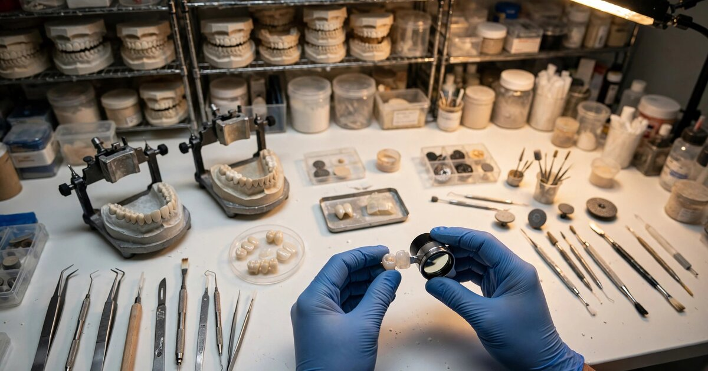

Dental Lab Case Pricing Intelligence for Independent Dental Practices
A zirconia crown costs a solo dentist in suburban Denver $185 from a domestic lab. The Heartland Dental location three miles away pays $109 for the same restoration from the same lab, negotiated through a 1,700-office purchasing contract. The solo dentist does not know this. Nobody sells her the data. That pricing opacity spans a $7.3 billion U.S. dental laboratory market (IBISWorld, 2025) and costs the roughly 128,000 independent dental practices in the country an estimated $1.9 billion a year in excess lab spending.

The Problem
Dental lab fees are the second-largest variable cost in a dental practice, after staff compensation. The American Dental Association's Health Policy Institute reports that lab fees typically consume 10-14% of gross billings for general practitioners, a figure that has been climbing as the case mix shifts toward higher-value restorative and implant work. For a practice billing $900,000 a year, that is $90,000 to $126,000 spent on lab fabrication. Practices with heavy crown-and-bridge or implant volumes routinely exceed $180,000.
The pricing of those lab cases is entirely opaque. A full-contour zirconia crown from a mid-tier domestic lab ranges from $89 to $259 depending on the lab, the dentist's negotiated price, the case volume committed, and whether the dentist is part of a buying group or DSO. A lithium disilicate (e.max) veneer ranges from $119 to $285. An implant-supported screw-retained crown ranges from $195 to $425. Those spreads are enormous, and they repeat with every case the practice sends out. A general practice places 300 to 600 crown cases per year. At a $76 per-unit pricing gap (the difference between the 25th and 75th percentile for a standard zirconia crown), a 400-case practice overpays by $30,400 annually on crowns alone.
Independent dentists have no mechanism to benchmark what they pay. None. Lab pricing is individually negotiated, rarely disclosed, and protected by purchasing agreements that discourage comparison. The dentist knows what her lab charges. She does not know what the dentist across town pays, what the DSO in her market pays, what offshore labs in Shenzhen charge for comparable restorations fabricated from the same zirconia blanks milled on the same brand of five-axis CNC equipment, or what the lab she uses charges the practice one ZIP code over for identical work. She negotiates from a position of pure ignorance against labs that know exactly what every client in the region accepts.
The information asymmetry has a structural cause. Grand View Research estimated the U.S. dental lab market at $7.06 billion in 2023, projected to grow at 6.3% CAGR through 2030. That market is fragmented on the supply side (the National Association of Dental Laboratories represents approximately 1,000 commercial labs, with thousands more operating independently) and increasingly consolidated on the demand side, where DSOs now control 30-35% of dental practice revenue. The supply side is fragmented. The demand side is not. Labs set prices individually. DSOs negotiate volume discounts of 20-40% below list. Independent dentists pay what they are quoted. That is the game.
Market Size
TAM calculation: The ADA reports approximately 202,304 active dentists in the United States as of 2023. Roughly 63% practice in solo or small-group settings (2-4 dentists), yielding approximately 128,000 independent dental practices. Exclude practices with less than $400,000 in annual revenue (estimated at 18,000, primarily part-time or winding-down practices). That leaves 110,000 addressable practices.
At a Standard tier of $149/month (anonymized lab fee benchmarks by restoration type, material, and metro area) and a Premium tier of $349/month (full intelligence suite including offshore comparison, quality-adjusted scoring, and negotiation support), with an estimated 70/30 split, the blended ARPU is $209/month. At 110,000 addressable practices, the base TAM is $275.9 million in annual recurring revenue.
A secondary revenue stream targets the supply side: labs themselves would pay for market positioning data, competitive pricing intelligence, and lead generation through a verified quality marketplace. At $399/month for 3,000 subscribing labs, that adds $14.4 million. Combined TAM: $290.3 million ARR.
Realistic SAM targets 4,500 paying practices at blended $209/month plus $2.5 million in lab subscriptions and enterprise data licensing in Year 3, yielding a target of $13.8 million ARR.
The Product
An anonymized dental lab fee benchmarking and procurement intelligence platform for independent dental practices, modeled on STR for hotels and Glassdoor for compensation. Core modules:
- Lab fee benchmarking engine: Anonymized, real-time pricing data for every major restoration type (PFM crowns, full-contour zirconia, e.max, implant abutments, custom abutments, screw-retained crowns, full and partial dentures, night guards, orthodontic retainers) broken down by metro area, lab tier (premium domestic, mid-tier domestic, economy domestic, offshore), and practice volume band. A dentist in Phoenix searching "full-contour zirconia crown, premium domestic lab, 20-40 cases/month" sees that the median is $142, the 25th percentile is $118, and the 75th percentile is $179. If she is paying $195, she now knows she is in the 88th percentile of overpayers for her volume and market
- Lab quality scoring: Crowdsourced quality metrics from participating practices: remake rates, shade accuracy, fit consistency, turnaround time, communication responsiveness, and digital workflow compatibility (STL file acceptance, 3Shape/Exocad/CEREC compatibility). These metrics address the core objection to price shopping ("cheaper labs produce worse work") by separating price from quality. A lab charging $165 with a 2.1% remake rate is demonstrably better value than a lab charging $135 with a 7.8% remake rate
- Offshore intelligence module: Quality-adjusted comparison of domestic vs. offshore lab pricing for practices considering international outsourcing. Chinese labs advertise zirconia crowns at $10-45 per unit versus $89-259 domestically, but hidden costs (shipping at $30-100 per batch, customs duties, 5-10 business day turnaround, remake logistics, material certification gaps) erode the spread. This module calculates the all-in cost per case including quality risk, helping practices make the offshore decision with data rather than anecdote
- Negotiation brief builder: Generates a data-backed document for lab fee negotiations. When a practice owner schedules an annual review with her lab rep, the brief shows her current pricing versus market percentile, the lab's pricing versus competing labs in the same quality tier, and a specific dollar-amount reduction target justified by market data. This transforms "Can you do better on crowns?" into "Your full-contour zirconia is at the 78th percentile for premium domestic labs in the Denver metro. The median for labs with comparable remake rates is $142. I'm requesting $148, which puts you at the 58th percentile and keeps you competitive for my 35 monthly cases"
Unit Economics
| Metric | Value |
|---|---|
| Monthly subscription (Standard: benchmarks + basic analytics) | $149/practice |
| Monthly subscription (Premium: full intelligence suite) | $349/practice |
| Blended ARPU | $209/month |
| Data infrastructure cost per subscriber/month | $18 |
| Customer acquisition cost | $1,800 |
| Expected LTV (30-month avg retention, 91% gross margin) | $5,706 |
| LTV:CAC ratio | 3.2:1 |
| Gross margin | 91% |
| Startup cost (18-month runway) | $2.8M |
| Break-even | 20 months |
Methodology note: The 30-month retention assumption is conservative relative to other vertical SaaS benchmarks (dental practice management software averages 48+ months). Retention here is lower because lab fee negotiation is a periodic, not daily, workflow. However, the ROI math is compelling: a practice paying $209/month ($2,508/year) that uses benchmarking data to secure even a $20/unit reduction on 400 annual crown cases saves $8,000 per year, a 3.2:1 return on subscription cost from a single restoration category. CAC of $1,800 reflects a channel strategy built around dental association partnerships (ADA, AGD, state societies), continuing education sponsorships, and referral networks. The dental profession is unusually concentrated in its information channels: Dental Economics, Dental Products Report, Dentistry Today, and the ADA's own publications reach a majority of practice owners.
Go-to-Market
Phase 1 (months 1-8): Recruit 600 practices in five metro areas (Houston, Chicago, Phoenix, Atlanta, and Philadelphia) to contribute anonymized lab fee data in exchange for free benchmarking access. These markets combine high practice density, a mix of DSO and independent operators, and enough lab competition to generate meaningful pricing variation. The data contribution ask is lightweight: the practice enters the restoration type, material, lab name (anonymized in output), and per-unit price from each lab invoice, a process that takes thirty seconds per line item and produces the exact dataset needed to build metro-level pricing benchmarks that no individual practice could construct alone. A practice with three lab relationships and five common restoration types enters 15 data points per month. Integration with practice management systems (Dentrix, Eaglesoft, Open Dental) via invoice import reduces this to near-zero manual effort.
Phase 2 (months 9-16): Monetize with the $149/month Standard tier. Expand data collection to 15 additional metro areas. Launch the quality scoring module by soliciting remake rates and satisfaction data from contributing practices. Begin approaching labs directly for supply-side subscriptions: a lab that can see its competitive pricing position has a powerful incentive to subscribe. For labs losing cases to cheaper competitors, the platform identifies exactly where their pricing sits and which quality metrics justify (or fail to justify) the premium.
Phase 3 (months 17-24): Launch Premium tier at $349/month with the offshore intelligence module and negotiation brief builder. Begin selling anonymized market intelligence to dental industry analysts, PE firms evaluating DSO acquisitions, and dental supply companies. Target 4,500 subscribing practices at blended $209/month = $11.3 million ARR plus $2.5 million in lab and enterprise subscriptions.
Competitive Landscape
| Company | What It Does | Lab Fee Intelligence? | Pricing |
|---|---|---|---|
| Dental Economics / Levin Group | Industry publication, practice management consulting | Annual survey data on average lab costs, published as aggregate national figures. No metro-level, no lab-specific, no real-time benchmarking | $200-500/yr (publication), $5,000+ (consulting) |
| Dental Intelligence / Jarvis Analytics | Practice analytics: production, scheduling, patient retention, treatment acceptance | Tracks lab expenses as a line item in practice financials. Does not benchmark against market rates or compare across labs | $299-599/mo |
| Henry Schein / Patterson Dental | Dental supply distribution, equipment, practice management software | Lab referral programs that connect dentists to preferred labs. No pricing transparency; distributors earn referral commissions that create misaligned incentives | Varies by product |
| Dandy / Glidewell | Vertically integrated digital labs with fixed per-unit pricing | Transparent own pricing, but no market-wide benchmarking. They want to be the cheapest lab, not to help dentists evaluate all labs | Crowns: $99-179 (Dandy), $99-149 (Glidewell BruxZir) |
| Dental buying groups (AADOM, GP Dental Alliance) | Group purchasing organizations for supplies and some lab services | Negotiate group discounts with selected labs. No data platform, no market-wide transparency, limited lab selection | Membership fees $200-500/yr |
| This startup | Anonymized lab fee benchmarking and procurement intelligence for independent practices | Core product: the STR/Glassdoor of dental lab pricing | $149-349/mo |
The gap is structural, and it is also intentional. Henry Schein and Patterson earn referral revenue from lab partnerships. Building a tool that helps dentists find cheaper alternatives would cannibalize their own referral income. Dandy and Glidewell are labs competing for cases; they have no incentive to build a marketplace that includes competitors. Dental Intelligence and Jarvis Analytics track what the practice spends, not what the market charges. The entity that builds lab pricing intelligence must be independent of both the supply chain and the lab ecosystem, which is why the tool does not exist today and why incumbents cannot build it without alienating their own revenue sources.
Why Now
Four forces converge to make this window the right one.
First, DSO consolidation is accelerating the pricing squeeze on independents. DSOs controlled an estimated 10-12% of U.S. dental practice revenue in 2018. By 2025, that share has grown to 30-35%, according to the ADA Health Policy Institute and industry analysts, a tripling in seven years that has fundamentally restructured the purchasing dynamics of every market where DSO and independent practices compete for the same lab capacity. The five largest DSOs (Aspen Dental, Heartland Dental, Pacific Dental Services, Dental Care Alliance, and MB2 Dental) collectively operate over 4,500 locations. When Heartland Dental sends 1,700 offices' worth of crown cases to a single lab network, it negotiates pricing that a solo practitioner cannot match and does not even know exists. The pricing gap between DSO-negotiated and independent-list lab fees has widened from an estimated 15% in 2018 to 25-40% in 2025 as DSO scale has grown.
Second, digital dentistry is standardizing case specifications in ways that make apples-to-apples lab pricing comparison newly possible. When crowns were handmade from wax-ups and physical impressions, every case was arguably unique, and labs could justify opaque pricing based on artisan craftsmanship. Now, over 60% of crown cases arrive at labs as digital STL files from intraoral scanners (iTero, 3Shape TRIOS, Medit i700). The output is a milled or printed restoration from a standardized zirconia or lithium disilicate blank. The craftsmanship variable has narrowed dramatically, but the pricing variation has not.
Third, the ADA's own data shows that independent dentist economics are under pressure. Average GP income was $215,320 in 2025, but inflation-adjusted earnings have been declining because expenses grow faster than reimbursement. Revenue grew 1.4% while expenses grew 4.9% over the most recent five-year period. Lab fees are one of the few variable cost categories where a practice owner can immediately improve margins through better procurement, and the data to enable that procurement does not currently exist.
Fourth, offshore lab outsourcing has gone mainstream without any quality transparency infrastructure to support it. Chinese dental labs now advertise full zirconia crowns at $10-45 per unit, compared to $89-259 for a domestic equivalent. Some of these offshore labs produce acceptable work. Others do not. Dentists making the offshore decision today rely on Facebook group recommendations, word of mouth, and trial orders, and the occasional Reddit thread where someone posts their quality assessment of six Chinese labs with no methodology, no controls, and no way to verify whether the reviewer is a real dentist or a lab sales rep operating under a pseudonym. A quality-adjusted pricing platform that includes offshore options fills an information vacuum that is already shaping $500+ million in annual lab spend decisions.
Original Contribution: The Lab Fee Opacity Tax
A calculation nobody has published: How much do independent dental practices collectively overpay on lab fees because they negotiate without market data?
Start with the spending base. Approximately 128,000 independent practices (solo and small-group, per ADA workforce data). Average lab spend: $85,000 per practice per year (midpoint of the $50,000-$180,000 range for practices billing $600,000-$1,200,000, using the ADA's 10-14% of gross billings benchmark). Total independent lab spend: approximately $10.9 billion. This represents roughly 60% of the $7.3 billion IBISWorld market figure when adjusted for the fact that dental lab revenue includes materials, overhead, and margin, while practice lab spend is the invoice total including markup.
Now estimate the pricing gap. DSOs negotiate volume discounts of 25-40% below independent list pricing on comparable restorations. Not all of that gap is pure overpayment by independents; some reflects legitimate volume efficiencies. Apply a conservative adjustment: assume 60% of the gap represents genuine information asymmetry (the dentist did not know better pricing existed) and 40% represents real volume-based cost differences the lab passes through. At a 30% average gross pricing gap and a 60% opacity share, the information-driven overpayment rate is 18%.
At 18% on $10.9 billion in total independent lab spending, the lab fee opacity tax is $1.96 billion annually. Round to $1.9 billion.
Round to $1.9 billion, an annual toll paid by independent practices for the privilege of negotiating blind in a market where their counterparties hold all the pricing data.
Divide by 128,000 practices: approximately $14,800 per practice per year in excess lab spending attributable to information asymmetry. For a practice operating on 15-20% net margins ($90,000-$240,000 in net income on $600,000-$1,200,000 revenue), the lab fee opacity tax represents 6-16% of annual profit. Recovering even half of it, $7,400 per year, through better-informed lab procurement pays for a $2,508 annual SaaS subscription 2.95 times over.
Limitations
This analysis has four weaknesses, none fatal but none trivial either.
First, the 25-40% DSO discount range is derived from industry interviews and lab sales materials, not from audited financial disclosures. DSOs do not publish their negotiated lab rates, and labs are contractually prohibited from disclosing them. The gap could be narrower (15-20%) in competitive lab markets with many domestic alternatives, or wider (40-50%) in markets where a single lab dominates. Without verifiable pricing data from both sides of the transaction, the opacity tax calculation is an estimate built on estimates.
Second, lab pricing is not purely a function of information. Volume genuinely reduces per-unit cost. A lab running 200 zirconia crowns per day from one DSO achieves milling machine utilization rates, material batch discounts, and shipping efficiencies that a solo practitioner sending 30 cases per month cannot replicate. Some portion of the pricing gap is real cost, not information arbitrage. The 60/40 split between opacity and volume efficiencies is an assumption, not a measured ratio.
Third, the data contribution model requires dentists to share what they pay their labs. Dentists are protective of their business arrangements, and some may view lab pricing data as competitively sensitive. If a dentist discovers she pays 30% more than her neighbor for the same restoration, the awkwardness is not with the platform; it is with the lab relationship she now knows is unfavorable. That discomfort could suppress data contribution rates below the critical mass needed for reliable benchmarking in smaller metro areas.
Fourth, lab quality is genuinely hard to measure and standardize. Remake rates are a useful proxy but not a complete one. A crown that seats without adjustment but has poor shade matching is not a "remake" in most tracking systems; it is an acceptable-but-suboptimal outcome that the dentist may not report. The quality scoring module relies on self-reported data from practices, which introduces reporting bias: dentists may underreport quality issues with labs they have long relationships with and overreport issues with new labs they are predisposed to distrust.
Strongest Counterargument
The most compelling case against this startup is that dental lab selection is not primarily a price decision, and a benchmarking tool built on price may optimize the wrong variable.
Consider how dentists actually choose labs. A 2023 Dental Products Report survey found that the top three factors in lab selection were quality/consistency (cited by 87% of respondents), turnaround time (71%), and communication/service (64%). Price ranked fourth at 58%. That matters. Dentists who have found a lab they trust are reluctant to switch for a $20/unit savings because the switching cost is real: every new lab relationship requires calibration of shade guides, adjustment protocols, communication workflows, and a period of elevated remake risk. A dentist whose lab consistently produces crowns that seat with minimal adjustment has quantified her lab's value in chair time saved. She may be rationally paying a premium, not irrationally overpaying.
This argument has genuine force. If the lab fee spread primarily reflects quality differentiation, not information asymmetry, then a price benchmarking tool is measuring the wrong thing. A dentist who switches from a $185/crown lab with 1.5% remakes to a $140/crown lab with 6% remakes saves $18,000 on 400 cases but loses $14,400 in remake costs (at $600 per remake including materials, chair time, and patient dissatisfaction) plus unquantified costs in patient experience and reputation. She saved nothing.
The counterpoint: this is exactly why the platform must include quality scoring alongside price benchmarking. The goal is not to drive dentists to the cheapest lab. The goal is to expose which labs deliver strong quality at which price points, and to identify labs charging premium prices without delivering premium outcomes. The dentist paying $185 for 1.5% remakes may be getting fair value. The dentist paying $195 for 5.2% remakes is not. Without benchmarking data, she cannot distinguish between the two scenarios. She just knows what she pays and what she gets, with no reference point for whether the ratio is competitive.
The Bottom Line
The U.S. dental lab market is a $7.3 billion industry where pricing is individually negotiated, never disclosed, and structurally skewed against the 128,000 independent practices that lack DSO-scale bargaining power. The same restoration, fabricated by the same lab, from the same digital file, costs 25-40% more for the solo dentist than for the DSO network down the street. No benchmarking tool exists to expose this gap because the supply chain incumbents (Henry Schein, Patterson) earn referral commissions that pricing transparency would disrupt, and the vertically integrated digital labs (Dandy, Glidewell) want to win cases, not empower comparison. Meanwhile, independent dentist economics are deteriorating: revenue growth trails expense growth by 3.5 percentage points, and lab fees are one of the few line items where better procurement directly improves margins. The market structure is identical to pre-STR hotels, pre-CoStar commercial real estate, and pre-Glassdoor compensation: fragmented buyers paying whatever they are quoted because nobody aggregates the data that would let them pay what the market actually charges.
What You Can Do
If you own an independent dental practice, start by pulling your lab invoices from the past 12 months and calculating your all-in cost per restoration type: per-unit fee plus shipping, plus any remake costs (materials and chair time for remakes should be allocated back to the lab relationship that caused them). Then ask two or three non-competing colleagues what they pay for the same restoration categories. That conversation alone will likely reveal a 20-40% spread and identify which of you is overpaying. When you negotiate with your lab next, lead with data: "I have four quotes for full-contour zirconia from labs with comparable remake rates, and yours is 22% above the median. Here is what I need to see to stay." Labs expect price pressure from DSOs. They do not expect it from informed solo practitioners, and most would rather reduce a margin than lose a 35-case-per-month account. If you are a dental software founder building practice analytics, the pricing layer sitting inside those invoice records is an untapped dataset. You already have the data pipeline. You just need the benchmarking logic.
Related
📰 Collision Repair Labor Rate Intelligence SaaS — the same information asymmetry between fragmented service providers and consolidated buyers, in auto body repair
📰 Dental Practice Transaction Intelligence — the opaque pricing problem in dental practice M&A, where PE buyers know every comp and solo sellers know none
📰 PBM Reimbursement Audit SaaS for Independent Pharmacies — independents versus dominant intermediaries with information advantage, in prescription drug reimbursement